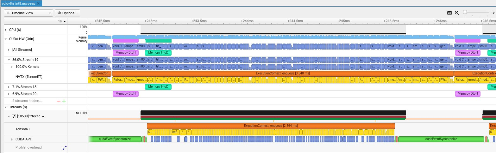

YOLOv8 on Jetson Orin Nano: From PyTorch to TensorRT INT8
Hardware: Jetson Orin Nano 8GB (MAXN_SUPER) + Samsung PRO Plus 256GB microSD
Model: YOLOv8n, 640×640 input, batch size 1
Measurement: GPU-only latency via CUDA events and trtexec
Results: TensorRT INT8 achieves 3.49ms / 286 FPS (6× faster than PyTorch)
Code: github.com/hokwangchoi/jetson-orin-nano-benchmarks
Hardware Setup
The Jetson Orin Nano is NVIDIA's entry-level edge AI platform. I'm using the 8GB developer kit with external storage for model files and faster I/O.
| Device | Jetson Orin Nano 8GB Developer Kit |
| GPU | 1024 CUDA cores, 32 Tensor Cores (Ampere) |
| Memory | 8GB LPDDR5 unified (CPU + GPU shared) |
| Storage | Samsung PRO Plus 256GB microSD (160MB/s read) |
| L4T Version | 36.4.7 |
| JetPack | 6.2 |
| TensorRT | 10.3 |
| CUDA | 12.6 |
Power Configuration
The Orin Nano supports multiple power modes. I use MAXN SUPER for benchmarking — this unlocks maximum GPU and memory clocks with no power cap.
# Check available power modes
nvpmodel -p
# Set MAXN SUPER mode (mode ID varies by JetPack version)
sudo nvpmodel -m 2 # MAXN_SUPER on JetPack 6.2
# Lock clocks to maximum frequency
sudo jetson_clocks
# Verify
nvpmodel -q
# NV Power Mode: MAXN_SUPERIn production, you'd choose a power mode based on thermal/power budget. But for benchmarking, MAXN SUPER gives us the hardware's true capability.
What We Measure (And What We Don't)
Inference latency has multiple components. Most benchmarks conflate them — we don't.
We report GPU Compute Time only — the actual kernel execution. This excludes:
- Python overhead — interpreter, framework dispatch
- H2D transfer — copying input tensor to GPU memory
- D2H transfer — copying output tensor back to CPU
Why? Because GPU compute is the optimization target. Transfers are fixed by data size; Python overhead vanishes in C++ deployment. Reporting end-to-end latency from Python would conflate things you can't optimize with things you can.
Measurement Tools
| Runtime | Tool | What It Captures |
|---|---|---|
| PyTorch | CUDA Events | GPU kernel execution only |
| TensorRT | trtexec GPU Compute Time |
GPU kernel execution only |
| Both | Nsight Systems | Per-kernel timing, memory ops, Tensor Core usage |
| Power | tegrastats | System power draw during inference |
CUDA Events for PyTorch
time.perf_counter() measures wall-clock time including CPU overhead.
CUDA events record timestamps on the GPU timeline:
start_event = torch.cuda.Event(enable_timing=True)
end_event = torch.cuda.Event(enable_timing=True)
start_event.record()
output = model(input)
end_event.record()
torch.cuda.synchronize()
gpu_time_ms = start_event.elapsed_time(end_event) # GPU-onlytrtexec Output
TensorRT's trtexec reports timing breakdown automatically:
=== Performance summary ===
Throughput: 119.5 qps
Latency: min = 8.21 ms, max = 9.12 ms, mean = 8.42 ms ← Host latency
GPU Compute Time: min = 8.30 ms, mean = 8.36 ms ← We report this
H2D Latency: min = 0.35 ms, mean = 0.48 ms
D2H Latency: min = 0.15 ms, mean = 0.22 msResults
| Runtime | Precision | GPU Latency | FPS | TOPS | Util% | Power |
|---|---|---|---|---|---|---|
| PyTorch | FP32 | 20.88 ms | 48 | 0.42 | 4.2% | 11.4 W |
| TensorRT | FP32 | 8.36 ms | 120 | 1.04 | 10.4% | 14.3 W |
| TensorRT | FP16 | 4.43 ms | 225 | 1.96 | 9.8% | 14.1 W |
| TensorRT | INT8 | 3.49 ms | 286 | 2.49 | 6.2% | 12.5 W |
TOPS = Achieved Tera Operations Per Second. Util% = percentage of hardware's theoretical peak (40 TOPS INT8, 20 TFLOPS FP16 on Orin Nano MAXN SUPER).
The Optimization Pipeline
Step 1: PyTorch Baseline
Ultralytics provides a clean API. The model runs on GPU but with no inference optimization:
from ultralytics import YOLO
model = YOLO("yolov8n.pt")
results = model.predict("image.jpg")Step 2: Export to ONNX
ONNX is the intermediate representation. We export to ONNX for two reasons:
- Visual inspection — open in Netron to explore layer structure
- TensorRT conversion — input format for building optimized engines
yolo export model=yolov8n.pt format=onnx imgsz=640 opset=17
# Inspect with Netron (optional)
# Upload yolov8n.onnx to https://netron.appStep 3: Build TensorRT Engines
TensorRT compiles the ONNX graph into an optimized engine. This includes:
- Layer fusion — Conv + BatchNorm + ReLU → single kernel
- Kernel auto-tuning — selects fastest implementation for your GPU
- Precision calibration — FP16/INT8 quantization
- Memory optimization — reuses buffers, minimizes allocations
# FP32 — baseline TensorRT
trtexec --onnx=yolov8n.onnx --saveEngine=yolov8n_fp32.engine
# FP16 — uses Tensor Cores
trtexec --onnx=yolov8n.onnx --fp16 --saveEngine=yolov8n_fp16.engine
# INT8 — maximum compression
trtexec --onnx=yolov8n.onnx --int8 --saveEngine=yolov8n_int8.engineUnderstanding FLOPs, TOPS, and Hardware Utilization
Vendors quote hardware performance in TOPS (Tera Operations Per Second). The Orin Nano claims 40 TOPS INT8 in MAXN SUPER mode. But what does that mean in practice?
FLOPs: Model Complexity
FLOPs (Floating Point Operations) measures the computational work for one inference. It's a property of the model architecture, independent of hardware:
- YOLOv8n @ 640×640: 8.7 GFLOPs
- YOLOv8s: ~28 GFLOPs
- YOLOv8m: ~79 GFLOPs
- YOLOv8x: ~257 GFLOPs
A multiply-accumulate (MAC) counts as 2 FLOPs. Most of these operations come from
convolutions: FLOPs = 2 × Cin × Cout × K² × H × W.
TOPS: Achieved Throughput
TOPS measures how many operations per second the hardware actually executes:
Utilization: The Reality Check
Utilization compares achieved TOPS to hardware's theoretical peak:
Why is utilization typically low (5-20%)?
- Small models — YOLOv8n's 8.7 GFLOPs can't saturate 1024 CUDA cores
- Memory-bound ops — data transfer limits Tensor Core usage
- Kernel launch overhead — dominates for many small kernels
- Batch size 1 — real-time inference can't batch for throughput
Utilization is a diagnostic tool: low utilization with acceptable latency is fine. Low utilization with poor latency suggests optimization opportunities — memory access patterns, kernel fusion, or larger batch sizes where applicable.
How Quantization Works
FP16: Tensor Core Acceleration
FP16 halves memory bandwidth and enables Tensor Cores — specialized matrix multiply units that compute 4×4 FP16 matrix ops in a single cycle. The Orin Nano has 32 Tensor Cores.
For most vision models, FP16 has no accuracy loss. The dynamic range (±65504) is sufficient for normalized image data and typical weight distributions.
INT8: Calibration Required
INT8 reduces precision from 32 bits to 8 bits — a 4× reduction. This requires mapping the FP32 value range to [-128, 127]:
The scale factors are determined by calibration — running
representative data through the network and measuring activation ranges.
TensorRT's Default INT8
Without a calibration dataset, trtexec --int8 uses min-max calibration:
- Assumes activations span [min, max] observed during a quick profiling pass
- Works reasonably for many models
- May lose accuracy on outlier-sensitive models
For production, provide calibration images:
trtexec --onnx=yolov8n.onnx --int8 \
--calib=calibration_images/ \
--saveEngine=yolov8n_int8_calibrated.enginePower Monitoring with tegrastats
The benchmark script samples power during inference using tegrastats:
# Sample output
RAM 3456/7620MB (lfb 1x1MB) SWAP 0/3810MB CPU [25%@1510,22%@1510,...]
GR3D_FREQ 99% VDD_IN 8500mW VDD_CPU_GPU_CV 3200mW VDD_SOC 1800mWKey fields:
GR3D_FREQ 99%— GPU utilization (should be high during inference)VDD_IN 8500mW— Total system power draw
We sample at 100ms intervals during the benchmark window and report mean power. This is approximate — for precise energy measurement, use a power meter.
Profiling with Nsight Systems
For detailed kernel analysis, we generate Nsight Systems profiles:
nsys profile --trace=cuda,nvtx -o yolov8_int8 \
trtexec --loadEngine=yolov8n_int8.engine --duration=5
# Open in GUI
nsys-ui yolov8_int8.nsys-repReading the Timeline
The Nsight timeline shows multiple rows of activity:

CUDA Streams: Software vs Hardware
A common confusion: CUDA Stream ≠ Streaming Multiprocessor (SM).
| Concept | Type | Purpose |
|---|---|---|
| CUDA Stream | Software queue | Order operations, enable overlap |
| Streaming Multiprocessor | Physical hardware | Execute threads (128 CUDA cores each) |
TensorRT creates multiple streams to overlap compute and memory transfers:
Pipeline Overlap: Why It's Fast
The Orin has separate hardware engines for compute and memory:
This enables triple buffering — three inferences overlap:
Kernel Names Explained
Zooming into the timeline reveals individual CUDA kernels:
| Kernel Name | What It Does |
|---|---|
sm80_xmma_fprop_impl... |
Convolution via Tensor Cores (xmma = matrix multiply-accumulate) |
void CUTENSOR_NAMES... |
cuTENSOR library ops (optimized tensor operations) |
generatedNati... |
TensorRT-generated fused kernel (multiple ops combined) |
void culn... |
Layer normalization |
Reformatting Co... |
Memory layout transform (NHWC ↔ NCHW for Tensor Cores) |
/model.*/conv... |
NVTX markers showing which YOLOv8 layer is executing |
Timing Breakdown
Different rows show different timing spans:
| Metric | Value | What It Measures |
|---|---|---|
| trtexec GPU Compute | 3.49 ms | CUDA events around kernels (averaged, most accurate) |
| TensorRT enqueue | ~2.5-3.5 ms | Single enqueue() call (varies per inference) |
| NVTX full span | ~3.5-4 ms | End-to-end including CPU overhead |
For benchmarking, use GPU Compute Time — it's what the GPU actually spent. For real-time latency (robotics, AV), use NVTX span — it's camera-to-result time.
Jetson Memory Architecture
Unlike desktop GPUs with separate VRAM, Jetson uses unified memory:
What We Learned
Our Nsight analysis reveals TensorRT is already well-optimized:
- Dense kernel packing — no idle gaps between kernels
- Memory overlap — transfers run parallel with compute
- Minimal CPU overhead — GPU-bound execution
- Efficient streaming — 89% work on main stream, auxiliary streams handle transfers
The low utilization (4-8%) is expected for YOLOv8n — it's too small to saturate the GPU. Larger models or batch sizes would show higher utilization.
Further Optimization: CUDA Programming
After TensorRT INT8, what's left? Custom CUDA kernels for operations TensorRT doesn't optimize.
1. Fused Pre/Post-Processing
Image preprocessing (resize, normalize, channel reorder) typically runs on CPU. A custom CUDA kernel can fuse these into a single GPU pass:
__global__ void preprocessKernel(
const uint8_t* input, // HWC uint8 [0,255]
float* output, // CHW float [0,1] normalized
int H, int W
) {
int x = blockIdx.x * blockDim.x + threadIdx.x;
int y = blockIdx.y * blockDim.y + threadIdx.y;
if (x >= W || y >= H) return;
// BGR → RGB, uint8 → float, normalize
int idx = y * W + x;
output[0 * H * W + idx] = input[idx * 3 + 2] / 255.0f; // R
output[1 * H * W + idx] = input[idx * 3 + 1] / 255.0f; // G
output[2 * H * W + idx] = input[idx * 3 + 0] / 255.0f; // B
}2. GPU-Accelerated NMS
Non-Maximum Suppression (NMS) is often a CPU bottleneck. NVIDIA provides
efficientNMSPlugin for TensorRT, but custom implementations can
further optimize for specific IoU thresholds and box counts.
3. Stream Pipelining
Overlap data transfer with compute using CUDA streams:
cudaStream_t stream1, stream2;
cudaStreamCreate(&stream1);
cudaStreamCreate(&stream2);
// Pipeline: while frame N computes, frame N+1 transfers
cudaMemcpyAsync(d_input1, h_frame1, size, cudaMemcpyHostToDevice, stream1);
context->enqueueV3(stream1); // Inference on frame 1
cudaMemcpyAsync(d_input2, h_frame2, size, cudaMemcpyHostToDevice, stream2);
// Frame 2 transfer overlaps with frame 1 inference4. Kernel Profiling
Use Nsight Compute for kernel-level optimization:
ncu --set full -o profile trtexec --loadEngine=yolov8n_int8.engineThis shows occupancy, memory throughput, and instruction mix per kernel — essential for identifying optimization opportunities.
Appendix: Power Mode Comparison
The Orin Nano supports multiple power modes. Here's how 15W mode compares to MAXN_SUPER:
| Precision | 15W Mode | MAXN_SUPER | Speedup |
|---|---|---|---|
| TensorRT FP32 | 11.04 ms | 8.36 ms | 1.32× |
| TensorRT FP16 | 6.13 ms | 4.43 ms | 1.38× |
| TensorRT INT8 | 4.90 ms | 3.49 ms | 1.40× |
MAXN_SUPER draws ~3-4W more power but delivers 30-40% better performance. For battery-powered or thermally-constrained deployments, 15W mode offers a reasonable tradeoff — still achieving 204 FPS with INT8.
Conclusion
- TensorRT FP16 is the sweet spot — Tensor Core acceleration with no accuracy loss
- INT8 provides further gains but requires calibration for accuracy-sensitive applications
- GPU-only latency is what matters — don't conflate with Python overhead
- Nsight Systems is essential for understanding where time goes
- Custom CUDA unlocks the last 10-20% via fused preprocessing and GPU NMS
Reproduce It
git clone https://github.com/hokwangchoi/jetson-orin-nano-benchmarks.git
cd jetson-orin-nano-benchmarks/vision-benchmarks/scripts
# Install dependencies
pip3 install ultralytics numpy
# Run benchmark
python3 benchmark_yolov8.py
Results are saved to assets/results/. Nsight profiles are in
assets/results/nsight_profiles/.
What's Next: VLM for Autonomous Driving
Object detection is just one piece of the perception stack. The next benchmark will explore Vision-Language Models (VLMs) on Jetson — models that can reason about scenes, not just detect objects.
For autonomous driving applications, VLMs enable:
- Scene understanding — "Is this intersection safe to proceed?"
- Anomaly detection — identifying unusual situations without explicit training
- Natural language queries — "What obstacles are in my path?"
- Multi-modal reasoning — combining camera, lidar descriptions, and maps
Candidates include Qwen2.5-VL-3B and NVIDIA Cosmos Reason 2B — both designed for edge deployment. Stay tuned.